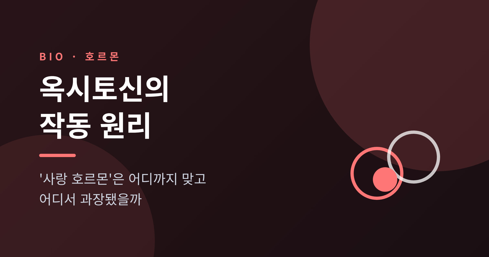
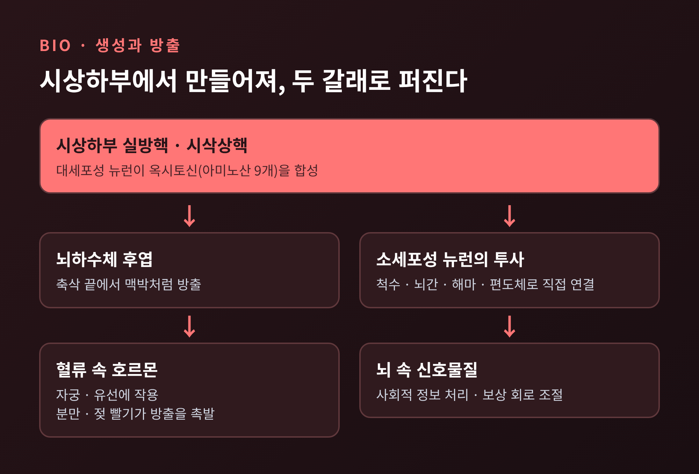
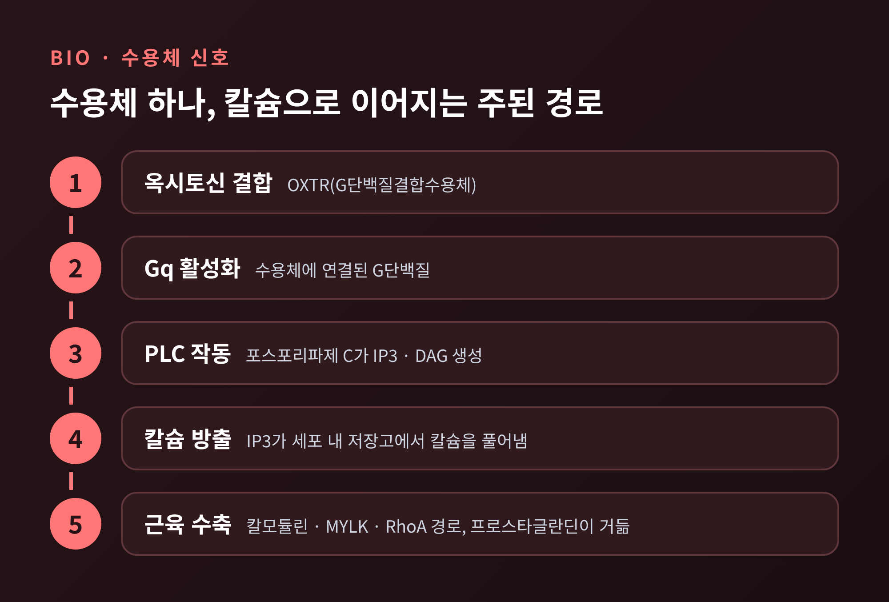
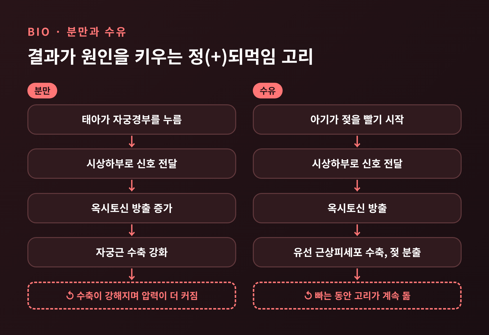
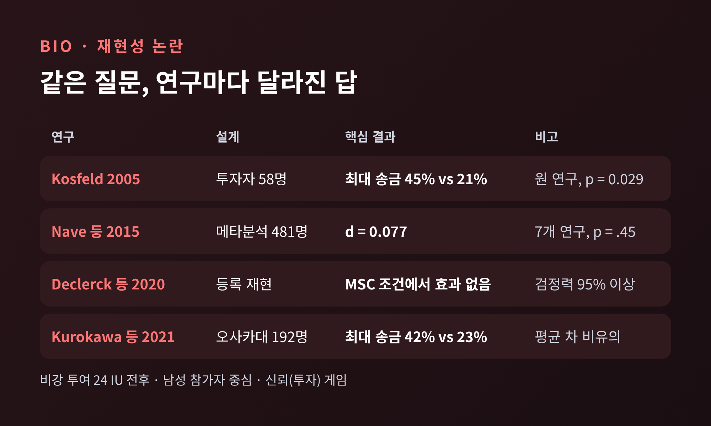
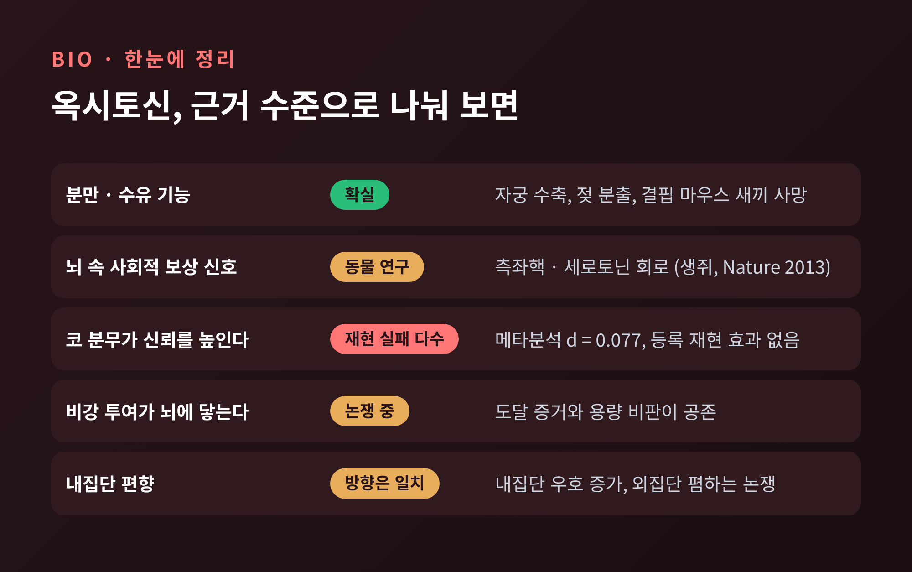

오늘은 옥시토신에 대해 이야기해 보려 합니다. 먼저 결론부터 적겠습니다. 분만과 수유에서 옥시토신의 역할은 확실합니다. 반면 "코에 뿌리면 사람이 더 믿게 된다"는 이야기는 재현에 실패한 부분이 많고, 옥시토신이 '내 편'에게만 따뜻할 수 있다는 연구도 있습니다. 어디까지가 근거 있는 이야기인지 순서대로 살펴보겠습니다.
옥시토신은 아미노산 아홉 개로 이루어진 작은 펩타이드입니다. 1906년 자궁을 수축시키는 효과로 처음 알려졌고, 1953년에는 서열이 밝혀져 합성된 최초의 펩타이드 호르몬이 되었습니다.
생산 공장은 시상하부입니다. 특히 실방핵과 시삭상핵에 있는 큰 신경세포(대세포성 뉴런)가 대부분을 만듭니다. 이 세포의 축삭은 뇌하수체 후엽까지 뻗어 있고, 그 끝에서 옥시토신이 혈액으로 방출됩니다. 방출은 일정하게 흐르는 것이 아니라 맥박처럼 일어납니다. 분만 때 자궁경부가 자극받거나 아기가 젖을 빨면 방출이 촉발됩니다.
같은 신경 계통에는 다른 갈래도 있습니다. 실방핵의 작은 신경세포(소세포성 뉴런)는 척수, 뇌간, 해마와 편도체 같은 뇌 영역으로 직접 가지를 뻗습니다. 같은 분자가 혈액 속 호르몬이자 뇌 속 신호물질로 일하는 셈입니다.

이 구조를 알면 '사랑 호르몬'이라는 별명이 왜 생겼는지 이해가 됩니다. 뇌에도 작용하니, 감정과 관계에도 관여하리라는 추정이 자연스러웠던 것입니다. 다만 추정과 증명은 다릅니다. 뒤에서 이 간격을 다루겠습니다.
옥시토신의 모든 작용은 OXTR이라는 단일 수용체를 거칩니다. G단백질결합수용체의 한 종류입니다. 주된 경로는 이렇습니다.
옥시토신이 수용체에 붙으면 Gq 단백질이 켜집니다. Gq는 포스포리파제 C를 활성화하고, 이 효소가 IP3와 DAG를 만듭니다. IP3는 세포 안 저장고에서 칼슘을 풀어냅니다. 칼슘이 오르면 칼모듈린과 미오신 경쇄 키나아제 계열이 작동하고, 근육 세포가 수축합니다. 프로스타글란딘 생성이 늘면서 수축을 거들기도 합니다.

수용체가 하나라는 점이 중요합니다. 같은 신호가 자궁근에서는 수축으로, 유선에서는 젖 분출로, 뇌에서는 전혀 다른 회로의 조절로 나타납니다. 어디에 수용체가 있고 어떤 상황에서 분비되느냐가 결과를 가릅니다.
옥시토신 연구에서 의심의 여지가 가장 적은 부분입니다. 핵심은 정(+)되먹임, 즉 결과가 원인을 다시 키우는 고리입니다.
분만에서는 태아가 자궁경부를 누릅니다. 이 압력이 신경을 타고 시상하부에 전달되면 옥시토신 방출이 늘고, 자궁 수축이 강해지며, 압력은 더 커집니다. 퍼거슨 반사라 불리는 이 고리는 분만 1기와 2기에 방출의 빈도와 세기를 키웁니다. 만삭에는 에스트로겐이 높아 자궁근의 수용체 감수성도 올라가 있습니다. 옥시토신은 탈락막과 양막에서 프로스타글란딘 방출도 자극해 자궁경부가 부드러워지는 것을 돕습니다.
수유도 구조가 같습니다. 아기가 젖을 빨면 감각 신호가 시상하부로 올라가고, 뇌하수체 후엽에서 옥시토신이 나옵니다. 이 호르몬이 유선의 근상피세포를 수축시켜 젖을 밀어냅니다. 빠는 동안 고리가 계속 돌아갑니다. 동물에서는 이 반사가 조건화되어 젖을 짜기 전에 이미 옥시토신이 오르는 모습도 관찰됩니다.

이 기능이 얼마나 필수적인지는 유전자 결핍 생쥐가 보여줍니다. 옥시토신이 없는 어미 쥐는 살아가고 번식도 하지만, 젖을 분출하지 못해 새끼가 죽습니다.
임상에서도 합성 옥시토신이 쓰입니다. 분만 유도와 촉진에는 분당 1~3 mIU로 시작해 최대 36 mIU까지 올립니다. 총량은 대개 5~10 IU입니다. 산후에는 5~10 IU를 주사해 출혈을 막습니다. 다만 고용량에서는 과자극 위험이 있고, 분만 시간을 최대 두 시간 줄일 수는 있어도 제왕절개율은 낮추지 못한다는 점이 확인되어 있습니다. 이 글은 교양 설명이며 개인의 의료 판단에는 의료진과 상의하셔야 합니다.
그렇다면 '사랑 호르몬'이라는 이미지는 아예 틀린 걸까요. 그렇지는 않습니다. 2013년 Nature에 실린 생쥐 연구가 근거를 줍니다.
연구진은 쥐가 다른 쥐와 지냈던 공간을 더 좋아하게 되는 현상, 즉 사회적 조건 장소 선호를 관찰했습니다. 측좌핵의 옥시토신 수용체를 막자 이 선호가 사라졌습니다. 코카인에 대한 선호는 그대로였습니다. 사회적 보상에 특이적인 효과였던 셈입니다. 시상하부 실방핵의 옥시토신 뉴런이 측좌핵으로 직접 연결되어 있다는 점도 확인되었습니다.
흥미로운 대목은 옥시토신이 혼자 일하지 않는다는 것입니다. 옥시토신은 등쪽 솔기핵에서 오는 신경 말단의 수용체를 거쳐 세로토닌 방출을 이끌고, 세로토닌이 5-HT1B 수용체로 흥분성 입력을 약화시킵니다. 연구진이 제안한 회로입니다. 사랑이나 행복을 직접 만드는 물질이라기보다, 사회적 접촉에 가치를 매기는 신호에 가깝습니다. 물론 쥐의 결과입니다. 사람에게 그대로 옮겨 말할 수는 없습니다.
대중적 이미지를 만든 것은 2005년 Kosfeld 등의 Nature 논문이었습니다. 남성 참가자에게 옥시토신 24 IU 또는 위약을 코로 투여하고 투자 게임을 시켰습니다. 투자자 58명을 분석했더니, 가진 돈 전부(12 단위)를 맡긴 사람이 옥시토신 군 45%(13명), 위약 군 21%(6명)였습니다. 위험만 있는 비슷한 게임에서는 차이가 없었습니다. 신뢰에만 작용한다는 해석이 가능했고, 이 결과는 널리 인용되었습니다.
예전엔 이 한 편이 곧 정설이었습니다. 지금은 평가가 크게 달라졌습니다.
2015년 Nave, Camerer, McCullough는 비강 투여 신뢰 게임 연구를 메타분석했습니다. 일곱 개 연구, 481명을 합쳤을 때 효과 크기는 d = 0.077이었고 신뢰구간은 0을 포함했습니다(p = .45). 원 연구의 개념적 재현 시도는 여섯 번 실패했습니다. 합친 표본으로 0.278보다 큰 효과는 배제된다는 계산도 나옵니다. 원 연구의 표본이 작아 우연히 크게 나왔을 가능성이 있다는 뜻입니다.
2020년 Declerck 등은 Nature Human Behaviour에 등록 재현 연구(결과와 무관하게 게재가 약속된 사전 승인 방식)를 냈습니다. 검정력 95% 이상의 대규모 이중맹검 실험에서, 최소한의 사회적 접촉 조건에서 옥시토신의 신뢰 효과는 나타나지 않았습니다. 신뢰 성향이 낮은 사람에게만 효과가 있을 가능성이 탐색적으로 언급되었지만, 확증은 아닙니다.

그렇다고 모든 연구가 효과 없음으로 끝나지는 않습니다. 2021년 오사카대 연구(192명)에서는 최대 금액을 보낸 비율이 옥시토신 군 42%, 위약 군 23%로 통계적으로 유의했습니다. 하지만 평균 송금액 차이는 유의하지 않았고, 침 속 옥시토신이 많이 오른 사람에게만 효과가 보인다는 분석은 사후 분석이어서 다중비교 보정 후에는 유의하지 않았습니다. 저자들도 사전등록이 아니라는 한계를 밝힙니다.
혈장 옥시토신 수치로 신뢰를 설명하려던 시도에도 문제가 있었습니다. 추출 과정 없이 측정하면 수치가 1~3자릿수까지 부풀 수 있습니다. 수용체 유전자와 신뢰의 연관도 큰 표본(684명, 1만 3천여 명 메타분석)에서 확인되지 않았습니다.
더 근본적인 질문이 남아 있습니다. 비강 분무가 애초에 뇌에 도달하느냐는 것입니다. 의견이 갈립니다.
닿는다는 쪽 근거는 이렇습니다. 원숭이에서 비강 투여 후 표지된 옥시토신이 뇌척수액과 후각·삼차신경 연관 영역에서 발견되었습니다. 쥐에서는 뇌 옥시토신의 95% 이상이 코에서 직접 왔다는 추정이 있습니다. 정맥 주사와 말초 농도가 비슷한데도 사회인지 효과는 비강 투여에서만 나타났다는 보고도 있습니다.
회의적인 쪽은 용량을 짚습니다. 사람 뇌하수체에 저장된 옥시토신이 약 14 IU인데, 행동 실험은 18~24 IU를 씁니다. 쥐에서 말초 투여로 혈장 농도를 기저의 500배로 올려도 뇌척수액은 세 배만 올랐다는 결과가 있습니다. Leng과 Ludwig는 말초 투여분의 0.002%만 중추에 닿는다고 추정했습니다. 이 수치는 제가 2차 자료(블로그 소개글)로 확인한 것이므로 참고용으로만 보시길 권합니다. 사람 뇌척수액을 직접 잰 연구는 13명 규모라 결론을 내리기 어렵다는 비판도 있습니다. 또 효과가 나타나는 시점에는 외부에서 넣은 옥시토신이 아니라 몸이 스스로 더 분비한 옥시토신이 작용했을 가능성도 제기됩니다.
정리하면, 도달 여부도 작동 방식도 아직 열린 질문입니다. 용량과 반응도 단순하지 않습니다. 어떤 연구에서는 8 IU에서 편도체 반응이 있었는데 24 IU에서는 없었습니다.
신뢰 이야기가 흔들리는 동안, 다른 방향의 연구도 있었습니다. 옥시토신이 따뜻함을 모두에게 나눠 주는 것이 아니라, 소속 집단에 한정될 수 있다는 것입니다.
2010년 De Dreu 등은 Science에서 세 개의 이중맹검 실험을 보고했습니다. 참가자가 자신과 내집단, 경쟁 외집단에 돈이 걸린 결정을 하는 설계였습니다. 옥시토신은 내집단에 대한 신뢰와 협력을 높였고, 외집단이 위협적일 때는 방어적 공격도 높였습니다. 먼저 공격하는 선제 공격은 늘지 않았습니다. 연구진은 이를 '돌보고 지킨다'는 뜻의 tend and defend로 요약했습니다. 외집단이 위협으로 인식되지 않으면 내집단 이타성만 늘었습니다.
2011년 PNAS 후속 연구는 더 나아가 옥시토신이 내집단 선호를 높이고 그보다 덜하게 외집단 폄하도 높인다고 해석했습니다. 이 해석에는 반론이 있습니다. 같은 학술지의 비평은 도덕 판단 실험에서 옥시토신이 외집단 판단을 바꾸지 못했고, 데이터가 보여주는 것은 내집단 선호 증가이지 외집단 폄하 증가가 아니라고 지적했습니다. 암묵적 연상검사 결과가 신념을 확정하지 못한다는 점도 짚었습니다. 내집단 우호가 늘어난다는 방향은 양쪽이 대체로 같고, 해로운 효과의 크기와 존재는 논쟁 중입니다.
이 연구들도 남성 참가자 대상이고, 앞서 본 재현성 문제에서 자유롭지 않습니다. 사랑 호르몬이 아니라 '혐오 호르몬'이라는 반대 구호도 같은 정도로 과장일 수 있습니다.

끝으로 한 마디만 더 드리겠습니다. 옥시토신은 분만과 수유라는 분명한 일을 하는 호르몬입니다. 사람 사이의 신뢰와 사랑까지 설명하는 만능 열쇠로 쓰기에는, 근거가 아직 모자랍니다.
"사랑 호르몬"이라는 이름은 가설이 만든 별명이었습니다. 별명은 쉽게 퍼지지만 검증은 느리게 따라옵니다. 코에 뿌리면 사람이 달라진다는 이야기를 다시 만나게 된다면, 표본이 몇 명인지부터 물어보시길 권합니다.